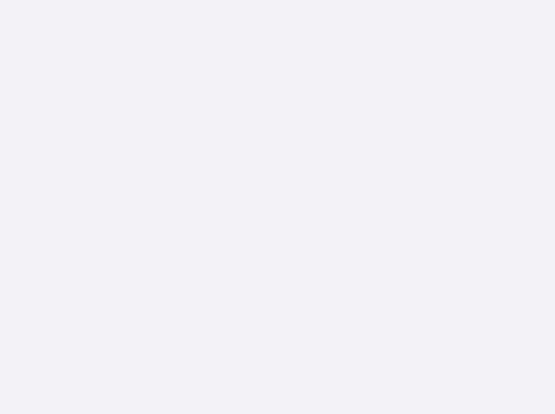
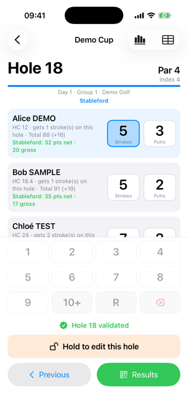
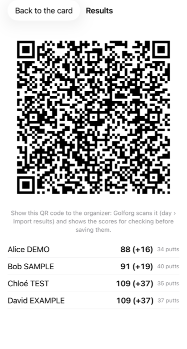
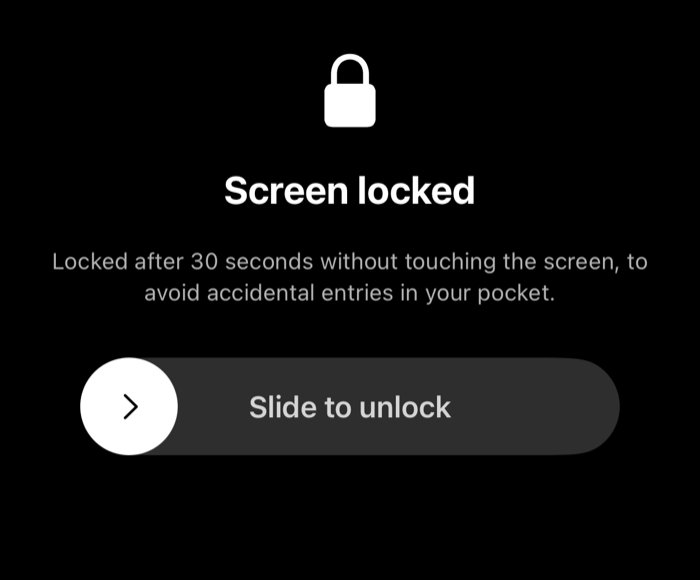
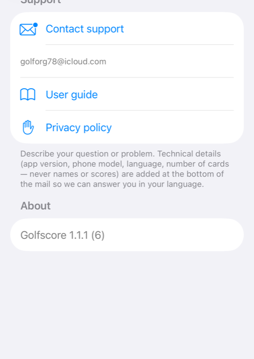
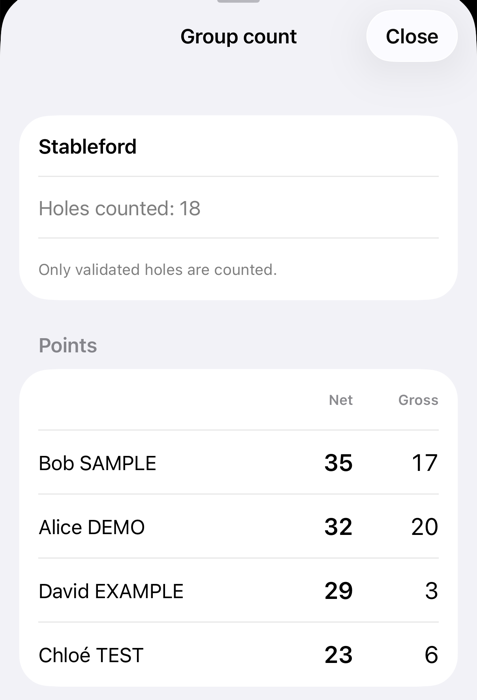

Golfscore — User guide
Enter your group's golf scores on your phone, then hand them to the organiser with a QR code.
1 What is Golfscore?
Golfscore is the companion app of Golforg, the tournament app used by organisers. The organiser prints a score card for your group; you scan its QR code, enter the scores hole by hole on your phone, and show a results QR code that the organiser scans. No account, no internet connection needed.
2 Step by step
- Open Golfscore and tap Scan a score card, then scan the QR code in the top right corner of the card (or ask the organiser to show it on their screen). You can also choose a photo of the QR code.
- For each hole, tap the strokes (and putts) of each player on the keypad. R = ball picked up. The cursor moves on by itself. The digits 1–9 are in the same place for strokes and for putts; for putts, 0 and 10 take the place of “10+” and “R”.
- When every player has a score, press and hold “Hold to validate the hole” for one second. A validated hole is locked and counts in the results and in the live count. To change it, hold “Hold to edit this hole” and confirm.
- Tap Next hole. The Card button shows all holes at a glance and lets you jump back to correct one.
- After the last hole, tap Results and show the QR code to the organiser: Golforg scans it and lets them check the scores before saving. Only validated holes are in the QR code; the screen warns you if some are missing.
Everything you type is saved after every key press: you can close the app or take a call and carry on later.



3 Good to know
- A player who only counts putts shows Putts only: just enter their putts.
- A picked-up ball (R) counts par + N in the totals (N is set by the organiser, 5 by default) and 0 in Stableford. You can still enter its putts.
- Putts cannot exceed strokes. The number of strokes received on a hole is shown under each name.
- After 30 seconds without touching the screen, the screen goes black to save battery and avoid accidental taps: slide to unlock. Nothing is lost.
- To delete a card, swipe it on iPhone or long-press it on Android; a confirmation is asked.
- A card printed before the QR code carried the full group sheet cannot be scanned: ask the organiser to print it again.
- The ? button on the home screen (Help at the bottom left on Android) opens Help: Contact support (the mail already contains your app version and phone model — never names or scores), the user guide, the privacy policy and the version number.


4 Live count and PDF
- Under the header of each hole, the format of the day is shown. On a Stableford day, each player's net and gross points appear; the Group count button shows the group's Stableford ranking, or the team total (net and gross) for shamble and scramble.
- The count only includes validated holes.
- Card → PDF produces the filled score sheet (A4 landscape): gross, to par, net and putts, the count of the format, and a signature line per player. Holes entered but not yet validated appear in orange, with a warning.
